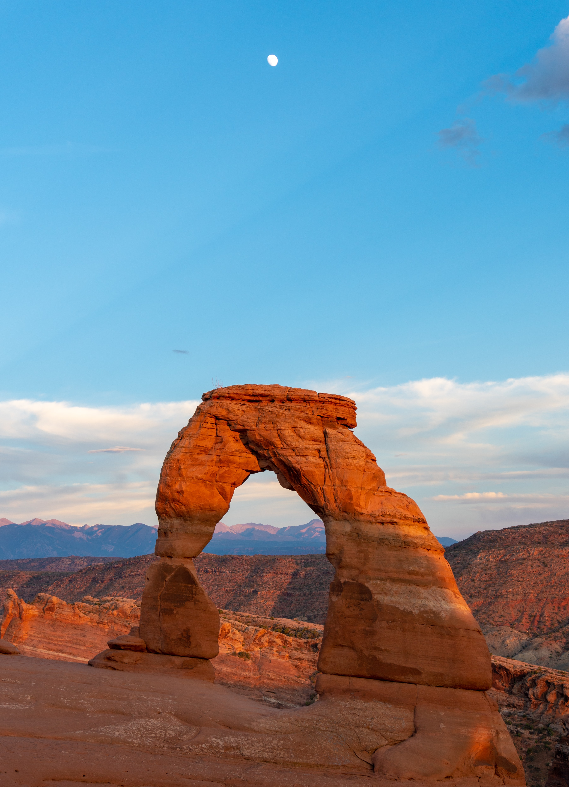
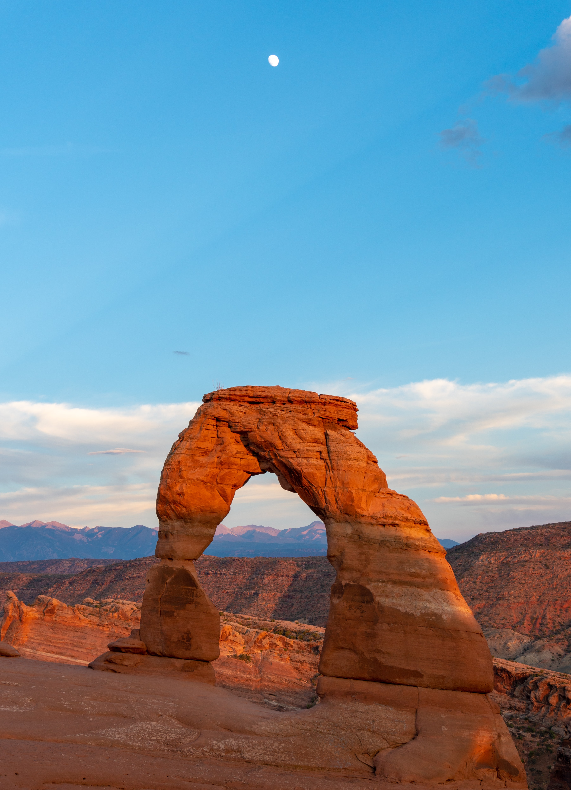
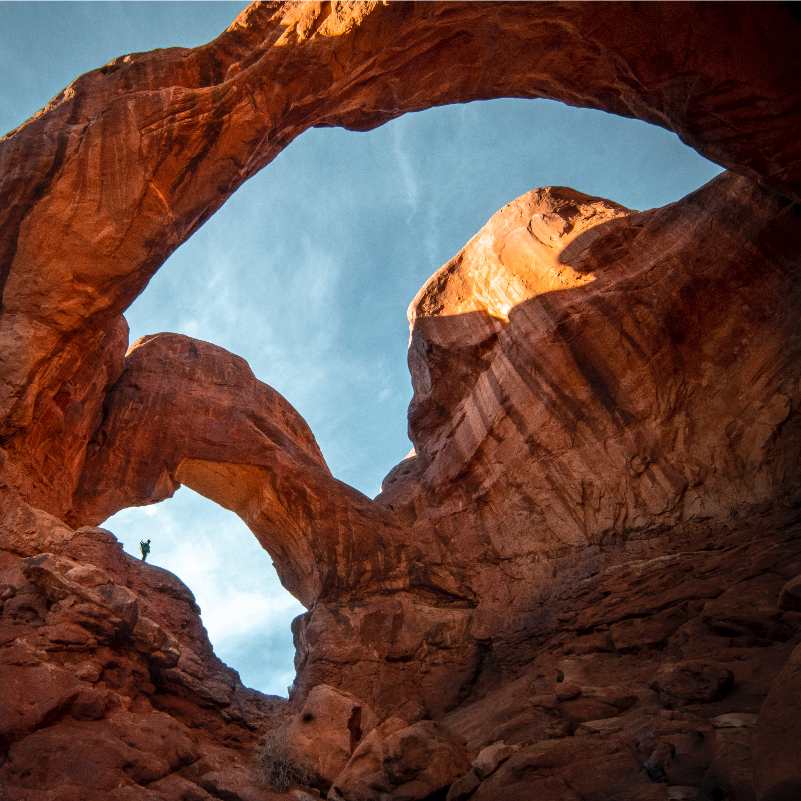
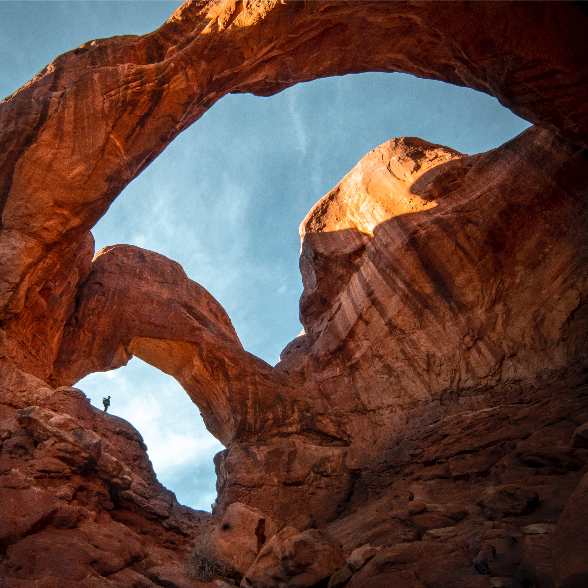
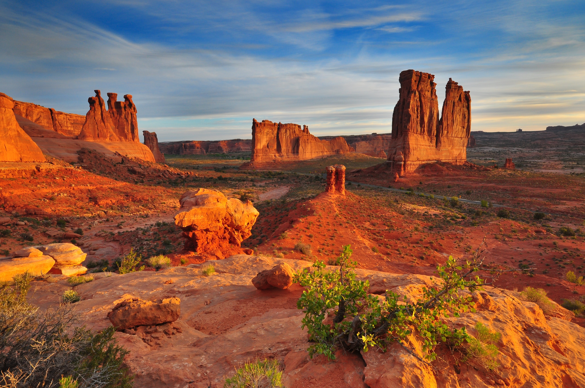
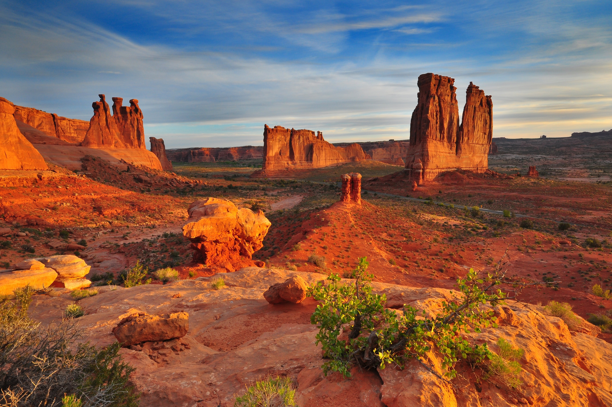

 

 

The story of Arches begins roughly 65 million years ago. At that time, the area was a dry seabed spreading from horizon to horizon. If you stood in Devils Garden then, the striking red rock features we see today would have been buried thousands of feet below you, raw material as yet uncarved. Then the landscape slowly began to change. Visit Arches to discover a landscape of contrasting colors, land forms, and textures unlike any other in the world. The park has over 2,000 natural stone arches and hundreds of soaring pinnacles, massive rock fins, and giant balanced rocks. This red-rock wonderland will amaze you with its formations, refresh you with its trails, and inspire you with its sunsets.